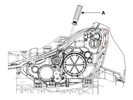

Head Lamp Aiming Instructions
Head Lamp Aiming Instructions
The head lamps should be aimed with the proper beam-setting equipment, and in accordance with the equipment manufacturer's instructions.
NOTE:
If there are any regulations pertinent to the aiming of head lamps in the area where the vehicle is to be used, adjust so as to meet those requirements.
Alternately turn the adjusting gear to adjust the head lamp aiming. If beam-setting equipment is not available, proceed as follows:
1. Inflate the tires to the specified pressure and remove any loads from the vehicle except the driver, spare tire, and tools.
2. The vehicle should be placed on a flat floor.
3. Draw vertical lines (Vertical lines passing through respective head lamp centers) on the screen.
4. With the head lamp and battery in normal condition, aim the head lamps so the brightest portion falls on the vertical lines.
A : Vertical(Low, High)
